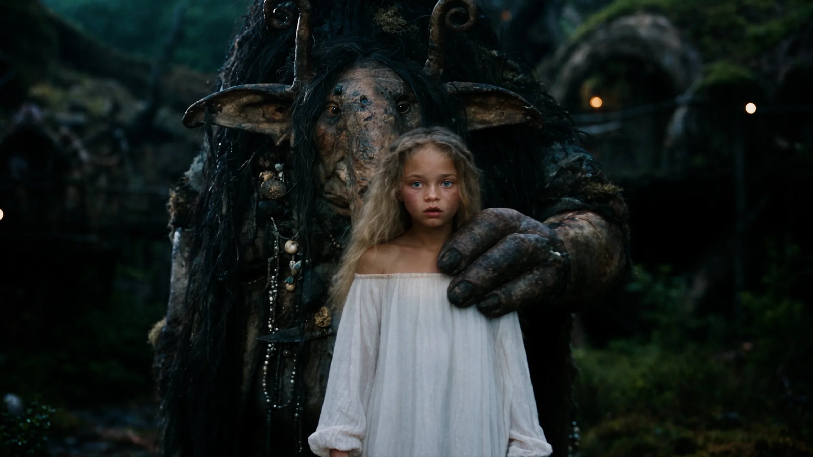
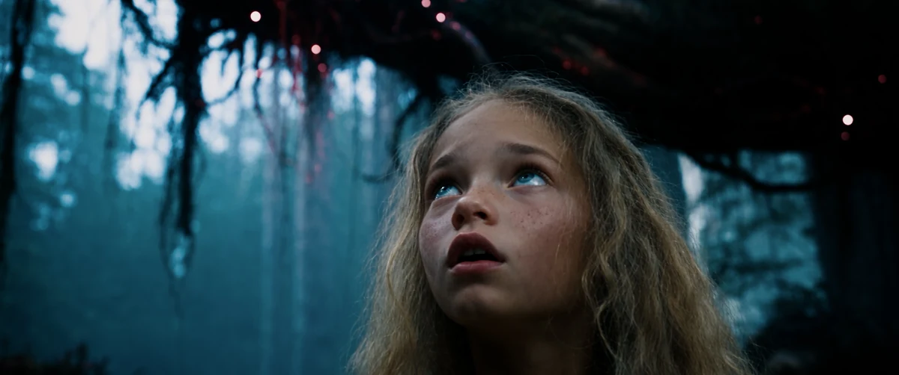
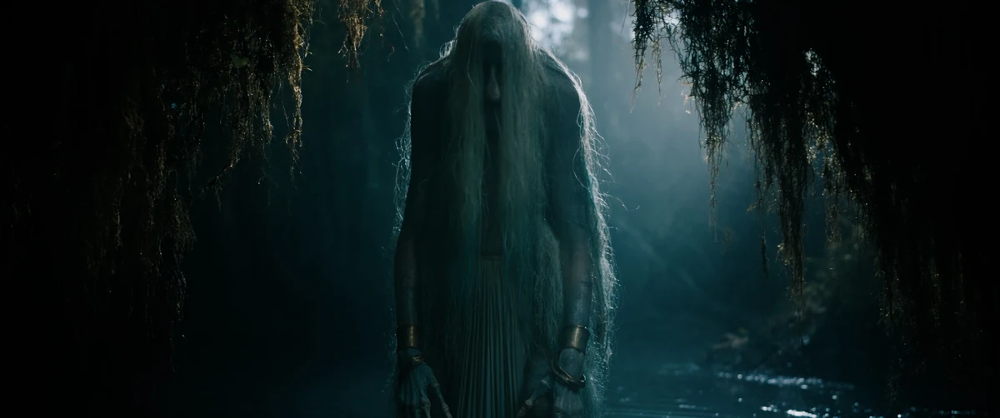
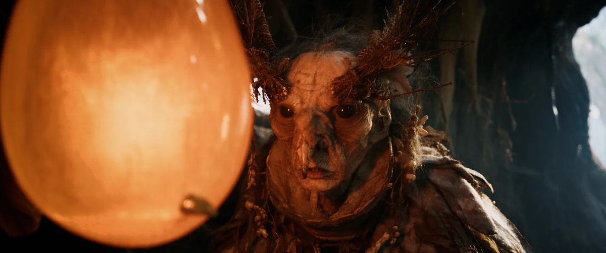
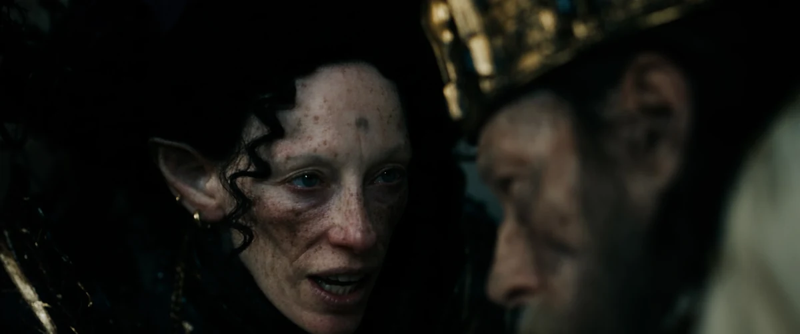

Tuvstar

Moss, roots and old creatures, lit by a strange and gentle light.
Tuvstar is a cinematic fantasy film set in the Nordic forest, built from natural textures, unusual light and quiet emotion.



